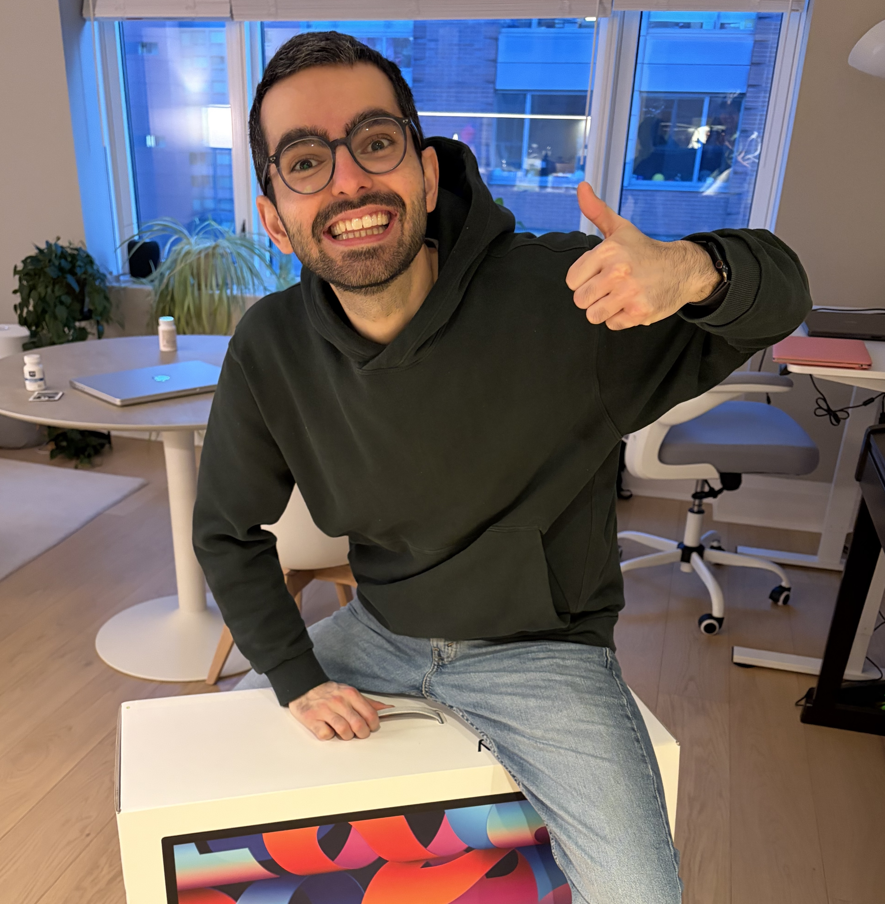

Pierrick Rugery
I am a Master student in robotics at NYU Tandon, advised by Yann Lecun and Lerrel Pinto. Previously I was at Institut Polytechnique de Paris. My research is focusing on World Model for robotics.
Email / Google Scholar / GitHub / Blog

I focus on AI for physical intelligence. My previous research centered on latent action spaces for robotics, and I'm now working on planning through learned world models.
Template adapted from Jon Barron's website (source). Last updated May 2026.